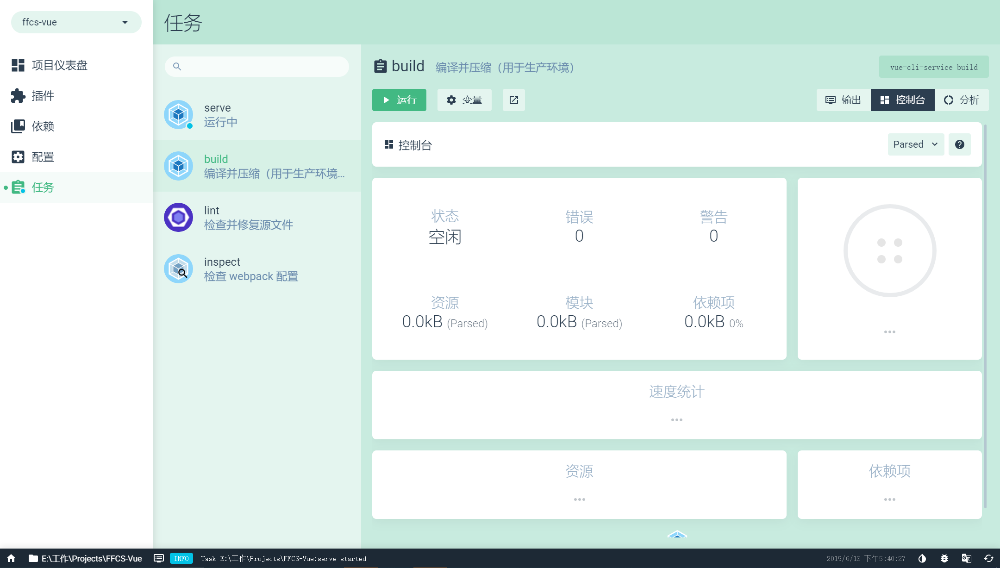

Node.js >= 6.0.0
NPM >= 3.0.0
Vue >= 2.6.10
vue-cli >= 3.0
ES6
（1）vue-cli：Vue的脚手架工具，用于自动生成Vue项目的目录及文件。
（4）ES6：Javascript的新版本，ECMAScript6的简称。利用ES6我们可以简化我们的JS代码，同时利用其提供的强大功能来快速实现JS逻辑。
（5）NPM：node.js的包管理工具，用于同一管理我们前端项目中需要用到的包、插件、工具、命令等，便于开发和维护。
（6）webpack：一款强大的文件打包工具，可以将我们的前端项目文件同一打包压缩至js中，并且可以通过vue-loader等加载器实现语法转化与加载。
（7）Babel：一款将ES6代码转化为浏览器兼容的ES5代码的插件
axios：基于Promise用于浏览器和nodejs的HTTP客户端，主要用于Ajax请求, 版本："^0.18.0"
vue-router：Vue提供的前端路由工具，利用其我们实现页面的路由控制，局部刷新及按需加载，构建单页应用，实现前后端分离, 版本： "^3.0.1"
vuex：Vue提供的状态管理工具，用于同一管理我们项目中各种数据的交互和重用，存储我们需要用到数据对象, 版本： "^3.1.0"
moment: 用于格式化日期 ，结合ant-desing-vue 的日期控件使用, 版本： "latest"
ant-design-vue：蚂蚁金服第三方组件库，提供开发所需的各种组件, 版本： "^1.3.8"
postcss-px2rem：将px转为rem的库，配合UI提供的页面使用, 版本： "^0.3.0"
qrcode.vue：说明： 用于生成二维码; 版本："^1.6.1"
vue-json-excel：说明：将表格数据转化成EXCEL 文件导出; 版本："^0.2.98"
vuescroll：说明：用于美化滚动条; 版本： "^4.12.0"
xlsx：说明：用于解析xls、xlsx文件内容; 版本： "^0.14.3"
echarts：说明：用于前端显示图表内容; 版本： "^4.1.0"
头部组件:tcc-head.vue
菜单组件:tcc-menu.vue ,tcc-menuItem
Tab组件：tcc-tab.vue
内容组件:tcc-content.vue
模块组件：Modular/index.js （用于同一设置变宽）
TITLE组件：Title/index.js (用于同一表格头部标题)
初始页及头部查询组件：comprehensiveCondition.vue
通用查询组件：globalCondition.vue
营业树组件： bussinessTree.vue
营业扎帐查询组件：conditionThe.vue
托收管理查询组件：condition.vue
帐务中心组件：financial_center
客户中心组件：customer_center
commonService.js 公共方法分装
permission.js 权限控制
工具类统一定义放入tools文件夹下 ，命名已小写字母开头，多英文采用驼峰模式，命名应该通俗易懂
export.js 导出工具类
print.js 打印工具类
watermark.js 水印工具类
fomatterDate.js 格式化日期
stringUtils.js 字符串处理
httpConfig.js 处理请求服务
regular.js 正则表达式验证
analysisXls.js 解析
excel文件
qrcode.js 生成二维
码cros.js 防止cros攻击请求预处理文件
|-----node_modules //模块包
|-----dist //打包后的项目目录，用于服务器部署
|-----public/static //外部静态资源，打包时不做编译
|-----src //源码文件
| |----- assets //公用静态资源，打包时有做编译
| | |-----fonts //字体
| | |-----files //文件
| | |-----images //图片
| | |-----tools //公用工具方法
| | |-----filter //Vue过滤器
| | |-----mixins //Vue混入方法
| |-----components //Vue组件
| | |-----(……) //按业务命名文件夹
| | |-----(……) //按业务命名文件夹
| |-----views //Vue页面
| | |-----(……) //按业务命名文件夹
| | |-----(……) //按业务命名文件夹
| |-----router //Vue路由配置
| |-----store //VueX状态配置
|-----package.json //定义项目所需模块以及项目配置信息
|-----vue.config.js //Vue Cli 配置文件
assets目录中的文件会被webpack处理解析为模块依赖，只支持相对路径形式。
建议使用该文件夹存放需要和项目一起编译的静态资源
public/static 目录下的文件并不会被Webpack处理：它们会直接被复制到最终的打包目录（默认是dist/static）下。必须使用绝对路径引用这些文件，这个取决于你vue.config.js中publicPath的配置，默认的是”/”。
建议使用该文件夹存放外部非业务静态资源
| |-----components //Vue组件
| | |-----(gropuA……) //按业务命名文件夹
| | |-----(gropuB……) //按业务命名文件夹
| |----- views //Vue页面
| | |-----(groupA……) //按业务命名文件夹
| | |-----(groupB……) //按业务命名文件夹
views 目录用于存放页面，该文件夹下按业务模块分不同文件夹，便于日后多项目组协同开发
| |----- router //Vue路由配置
| | |-----index.js //路由入口文件
| | |-----(……) //按业务命名文件夹
| | |-----(……) //按业务命名文件夹
router目录用于存放Vue路由配置，该文件夹下除了入口文件以外，按业务模块分不同文件，便于日后多项目组协同开发
| |----- store //Vuex状态配置
| | |-----index.js //Vuex入口文件
| | |-----(……) //按业务命名文件夹
| | |-----(……) //按业务命名文件夹
views目录用于存放Vuex状态配置，该文件夹下除了入口文件以外，按业务模块分不同文件，便于日后多项目组协同开发
图片存放文件夹统一命名：images
业务组件文件夹统一命名：group
图片名称要详细，“_”区分多个字母，禁止出现大写字母，禁止出现单个字母、或者数字区分。
例： product_add.png product_add_hover.png
在使用VUE开发项目的情况下，为了避免有关JavaScript或HTML中的冲突，对各项命名进行规范处理，同时尽量不要在VUE中使用jQuery操作DOM。
使用ref，例如
正：
<span class="ffued-nav-bar" ref="navBar" style=""></span>
function _testFuncion () {
this.$parent.$parent.$refs.navBar.style.top = 0 + 'px'
}
注意：项目中禁止使用jquery对元素进行操作
反：<span class="ffued-nav-bar" id="navBar" style=""></span>
function _testFuncion () {
Jquery(‘#navBar’).style.top = 0 + 'px'
}
正:
>export default {
name， //组件名称 同文件
components， //外部组件引入
props， //组件外部属性
data， // 组件内部属性
computed， //计算属性}
反:
export default {
components， //外部组件引入
props， //组件外部属性
data， // 组件内部属性
computed， //计算属性}
name //组件名称
components //外部组件引入
mixins // 混入方法
props //组件外部属性
data // 组件内部属性
computed //计算属性
methods //组件方法
created、mounted、updated、activated、destroyed //生命周期方法
watch //监听属性
在定义组件时必须定义组件名称，Vue文件已大写字母开头,多字母采用驼峰格式
正:
export default {
name， //组件名称 同文件
components， //外部组件引入
props， //组件外部属性
data， // 组件内部属性
computed， //计算属性}
反:
export default {
components， //外部组件引入
props， //组件外部属性
data， // 组件内部属性
computed， //计算属性}
命名：组件名称应始终为多字,这可以防止与现有和未来HTML元素冲突，因为所有HTML元素都是单个单词。
正:
Vue.component('todo-item', {})
export default { name: 'TodoItem',}
注意：使用component 定义组件时命名 使用 a-b （todo-item），在VUE文件中命名使用AB（TodoItem）形式
反:
Vue.component('todo', {})export default { name: 'Todo',}
定义尽可能的详细，type、default等
正：
Props：{status: String}
props:{
data: {
type: Object,
default: funciton () {
return {}
},
required: true }}
反：
props: ['status']
注意：type：Object,String,Number,Array,Function,Boolean,symbol
该值必须是返回对象的函数
正
Vue.component('some-comp', {
data: function () {
return { foo: 'bar' }
}})
export default {
data () {
return { foo: 'bar' }
}}new Vue({ data: { foo: 'bar' }})
反：
Vue.component('some-comp', {
data: { foo: 'bar' }
})
export default { data: { foo: 'bar' }}
命名：首字母小写或已下划线开头、驼峰式
正methods: { getName() {},_getName:function(){}}
反：methods: { GetName() {},123Name:function(){}}
应该使用js文件去定义常量，然后再引入
使用ES6的解构模式去解析参数
let obj = {name: ‘ahpome’,age: 12, department: ‘TCC’}正：let {name , age , department }= obj
反：let name = obj.name let age = obj.namelet department = obj.department
在接受后台返回的数据并引用数据时要进行数据校验
let obj = {name: ‘ahpome’,age: 12, department: ‘TCC’}正：let {name , age , department }= obj If(name && name.indexOf(‘ahpome’’)> -1) {}
反：let {name , age , department }= obj If(name.indexOf(‘ahpome’’)> -1) {}
所有页面style使用scoped
Vue文件内的style统一使用sass或less语法编写
正：<style lang="scss" scope> 或 <style scope>
反：<style lang="scss"> 或 <style>注意：在单页面中style 一定要使用scope作用域，否则会影响到全局的样式
created:调用加载画面前的ajax请求
mounted:调用画面加载完的ajax请求
封装方法后的括号前加空格，例如getUserId (index) {}
正： _getUserInfo () {}
反： _getUserInfo(){}注意： 括号前后加上空格
调用方法不加空格，例如getUserId(index)
正： _getUserInfo(userId)反： _getUserInfo (userId)注意： 调用时不加任何空格
代码换行不加分号“；”
正：let name = ‘ahpome’ let age = 23
反：let name = ‘ahpome’; let age = 23;注意： 调用时不加任何空格
在if条件中使用是否相等时使用恒等判断
正：if(age === 23)
反：if(age == 23)注意： 判断符号前后要加空格
具体标准以ESLint为准
当需要缓存this时必须使用_this 或 _$this变量进行缓存
例：let _this= this; 或 let _$this= this
变量：首字母小写、驼峰式命名
正： let name, let myName , let _name， let _myName, let _$name 等
反： let Name, let MyName , let Myname ,let myname, let 123Name , let name123 等注意： 变量名称禁止以数字开头或结尾，大写字母开头,不使用var进行变量定义
常量：全字母大写、“_”分隔字母
正： const DATETYPE, DATE_TYPE 等
反： const dateType ,date_type注意： 常量全部使用大写字母
类：首字母大写、驼峰式命名
正： class Person, PersonBaseInfo
反： class persion, personBaseinfo, 123person, _person注意： 禁止使用小写字母或数字，下划线开头
methods中的监听事件方法（建议）：以_handle开头
正： _handleClickUser
反： handleClickUser
methods中的请求后端方法（建议）：请求方式+功能名称，驼峰式
正： _getUserInfo
反： getuserinfo 或 getUserInfo
methods方法命名
系统中所有用到的方法统一已_ 开头（例:_queryAccount），并采用驼峰格式命名
正：_getUserInfo({name, age}) 或 _getUserInfo(params)
反：_getUserInfo(name, age)注意： 尽量使用对象方式传入参数，可拓展性强
_fetch(params) // 用户查询或提交的统一入口 _initData(), // 初始化数据入口 _clearData() // 清空数据入口
全局参数命名已global开头
正： globalParams
反： params
Session中key定义session开头
正： sessionUserInfo
反： userInfo
定义枚举
const, 使用大写进行命名,对象属性使用大写例：QUERY_TYPE = { STAFF_TYPE: 1,STAFFCODE_TYPE:2,CODE: 3}
组件名称定义
已大写开头,或字母使用驼峰
正： ComprehensiveQuery
反： comprehensivequery注意：组件中data，必须有name属性，且值同组件名称相同 （例：组件名称为ComprehensiveQuery，那么 data { return {name:’ComprehensiveQuery’}}
vuex中state文件属命名
已小写字母开头（例：tagsList）,如果使用get方式 则已大写子=字母开头
正： get UserToken()
反： get usertoken()
vuex中mutations文件属性命名
使用大写进行命名，多单词使用_ (例: LOGIN_IN, LOGIN_OUT),变量的命名, 不得使用 js 保留字
js 保留字列表：
abstract boolean break byte case catch char class const continue default dodouble else extends false final finally float for function goto if implementsimport in instanceof int interface long native new null package privateprotected public return short static super switch synchronized this throw throwstransient true try var void while with
id: 必须使用英文命名，首字母小写、驼峰式命名方式，使用惯例名称，除非常用简写，否则不可使用简写, 每个页面只能只用一次ID，确保网页中唯一有效的时候才可使用
class: 禁止出现大写字母，请使用”-“对字母分隔
<meta charset="utf-8">
<!-- 注释 -->
不需要指定type类型
classid,namedata-*src,for,type,hreftitle,altaria-*,role
根据元素的意义来使用，<header></header>、<aside></aside>、<footer></footer>等
每个元素另起一行，每行缩进四个空格，不同的编辑器请确保tab是四个空格缩进时使用
使用html5文档类型申明：<!DOCTYPE html>
禁止使用行内样式，例：<div style=”width:100px;”></div>
样式属性后面必须加“;”
多选择器之间必须换行
针对特定dom样式，使用元素名+类名的方式
一个样式规则包含多个selector时，每个选择器必须独占一行
例：.post,.page{}
选择器与 { 之前必须有空格，
属性名的 ：后必须有空格，
属性名的 ：前面禁止加空格，
属性名前一次缩进四个空格，不同的编辑器请确保tab是四个空格缩进时使用，
禁止一行样式 例：.c {width:100px;}
省略0后面的单位。
颜色优先使用颜色英文、十六进制、透明时使用RGBA，
定位（常见：display、position、left、top、float等）
盒模型（常见：width、height、margin、padding、border等）
其他（color等）
不能满足再自己拓展
使用ant-design-vue原生插件
引入ant-design-vue推荐使用的 babel-polyfill 和 babel-plugin-transform-runtime来支持所有的现代浏览器和 IE9+
如第三方组件有小版本更新应及时更新，当出现大版本更新时，需结合项目实际情况进行更新
例：import Condition from './ConditionFrom/condition'
import ConditionThe from './ConditionFrom/conditionThe'
export default {
install (Vue) {
Vue.component(Condition.name, Condition)
Vue.component(ConditionThe.name, ConditionThe)
}
}全局注册后在main.js使用 Vue.use(myPlugins)
获取state中的数据： this.$store.state.params (params为 state中定义的数据)
改变state中的数据： this.$store.commit(‘SET_PARAMS’, 1) （SET_PARAMS 为mutations中定义的方法）
用于非父子组件间通信，通过$bus.$emit 访问事件名称， 并带入参数（例：this.$bus.$emit(‘Condition’,_$params)）
子组件在声明时添加props属性， 并设置对应参数名称。
父组件在使用时，带入props 中对应的属性 并可以把数据传入给子组件
父组件定义方法并声明事件，子组件中使用this.$emit 调用事件并带入参数
使用mixins为组件注入共有属性、方法、事件
注意：使用全局混入要注意判断，应为全局混入会影响到工程中所有的vue组价，包括引用的第三方组件
用于全局数据的状态管理，保存数据
state定义状态属性
mutations 定义变化事件， 用于改变state中属性的状态
Main.js文件下，配置了根据用户权限限制路由的方法：
router.beforeEach((to, from, next) => { ……}
该方法通过判断vuex中通过从后端请求的用户的信息以及token进行路由限制
Config文件夹下，apiAddress.js整合了所有项目用到的接口，
通过接口转发的方式可实现服务联调
Config文件夹下，axiosConfig.js配置了axios请求事件的方法，
通过对请求事件的拦截和配置，可以实现每次请求的权限判断、超时请求时间设置、修改请求头以及封装请求方式
Vue.config.js文件下，配置了Vue Cli的多种方法，其中就包括端口的代理配置：
例：proxy: { '/api': { // 开发接口联调请求服务器地址，每次修改地址需要重新编译项目 target: 'http://192.168.XXX.XXX', changOrigin: true, // 跨域 ws: true, pathRewrite: { '^/api' : '/api' } } },'/api'：需要做接口代理的标识，'/api'开头的地址才做代理target：接口联调请求服务器地址，每次修改地址需要重新编译项目changOrigin：跨域pathRewrite：替代规则
Vue.config.js文件下，配置了Vue Cli的多种方法，其中就包括端口的代理配置：
例：overlay: { warnings: true, errors: true}
warnings：开启后若代码有不符合规范的地方会在控制台上报错
errors：开启后若代码有不符合规范的地方会在编译时不允许通过
ESLint规则部分 可以在.eslintrc.js 文件中配置
通过config文件夹下的remConfig.js与vue.config.js共同配置
只需要设定要vue.config.js中的remUnit以及remConfig.js下的baseSize基本大小。另外，设定remConfig.js下的scale宽度部分调整和UI匹配的宽度标准之后，再通过main.js引用即可。
axiosConfig.js文件下，通过拦截器拦截请求，调用assets/tools/cros.js文件中的方法，对请求的url做了处理，得到的signin和key分别放入请求的相应位置中，再发送请求。
该配置用于防止CROS攻击，需要和后端确定后再使用。
例：在babel.config.js中配置module.exports = { presets: [ [ '@vue/app', { useBuiltIns: 'entry' } ] ]}
并在主入口文件main.js中引入import '@babel/polyfill'
项目根目录内执行：npm run serve
在serve下，点击“运行”，等待编译完成之后，即可启动app
项目根目录内执行：npm run build
或者使用图形界面进行打包：
在build下，点击“运行”，即可打包好项目，项目默认存于dist文件夹内，用于生产环境的发布

可以按部署需要修改公共路径和输出目录等配置
Vue CLI 提供了一个“现代模式”帮你解决这个问题。以如下命令为生产环境构建：
vue-cli-service build --modern
Vue CLI 会产生两个应用的版本：一个现代版的包，面向支持 ES modules 的现代浏览器，另一个旧版的包，面向不支持的旧浏览器。
这里没有特殊的部署要求。其生成的 HTML 文件会自动使用以下技术：
现代版的包会通过 <script type="module"> 在被支持的浏览器中加载；它们还会使用 <link rel="modulepreload"> 进行预加载。
旧版的包会通过 <script nomodule> 加载，并会被支持 ES modules 的浏览器忽略。
一个针对 Safari 10 中 <script nomodule> 的修复会被自动注入。
对于一个 Hello World 应用来说，现代版的包已经小了 16%。在生产环境下，现代版的包通常都会表现出显著的解析速度和运算速度，从而改善应用的加载性能。